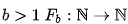
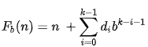
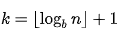
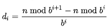
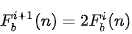

Перевернуть и сложить
Операция «Перевернуть и сложить» (англ. Reverse-and-add) заключается в том, чтобы сложить исходное число с его «перевёрнутой» копией, то есть числом, цифры которого записаны в обратном порядке. Например, 56 + 65 = 121, 521 + 125 = 646.
Эта операция может быть применена к любому натуральному числу. Если в результате применения этой операции N раз к некоторому числу будет получен палиндром, то такое число называют «отложенным палиндромом», разрешающимся за N итераций. В отличие от отложенных палиндромов, для чисел Лишрел эта операция не приводит к получению палиндрома, сколько бы раз мы её не выполняли.
Некоторые числа (в частности, все однозначные и почти все двузначные числа) становятся палиндромами достаточно быстро — после применения всего нескольких операций. Так, около 80 % всех чисел, меньших 10000, разрешаются в палиндром за 4 или меньше итерации. Около 91 % — за 7 и меньше итераций. И только два числа — 89 и обратное ему 98 — требуют необычно много: 24 операции.
Вот несколько примеров отложенных палиндромов:
- 56 становится палиндромом после одной итерации: 56 + 65 = 121.
- 57 становится палиндромом после двух итераций: 57 + 75 = 132, 132 + 231 = 363.
- 59 становится палиндромом после трёх итераций: 59 + 95 = 154, 154 + 451 = 605, 605 + 506 = 1111.
- 89 требует необычно много — 24 итерации, прежде чем достичь палиндрома 8813200023188 (это наибольшее количество операций среди чисел до 10000, о которых на текущий момент времени научному сообществу точно известно, что они разрешаются в палиндром).
- 10 911 достигает палиндрома 4668731596684224866951378664 после 55 итераций
Наименьшее число, начиная с 1, которое, видимо, не образует палиндром, — трёхзначное число 196. Это наименьшее известное потенциальное десятичное число Лишрел.
Наиболее отложенные палиндромы
Среди бесконечного количества отложенных палиндромов особенно интересны те числа, которые требуют наибольшего количества итераций для превращения в палиндром.
Так, 30 ноября 2005 года Джейсоном Дусеттом (англ. Jason Doucette) с помощью компьютера был найден отложенный палиндром 1 186 060 307 891 929 990, который после 261 итерации становится 119-значным палиндромом 44562665878976437622437848976653870388884783662598425855963436955852489526638748888307835667984873422673467987856626544. Это число являлось мировым рекордом среди наиболее отложенных палиндромов на протяжении более чем 13 лет!
В мае 2017 года телеканал МИР24 сообщил, что московский школьник Андрей Щебетов обнаружил самый большой известный отложенный палиндром — число 1999291987030606810. Однако, ничего интересного в этом числе нет, так как оно получено простой перестановкой пар симметричных цифр из числа, обнаруженного Джейсоном Дусеттом. Наибольшим известным 19-значным числом, разрешающимся за 261 итерацию является число 1 999 999 936 042 548 910, а самое большое известное число состоит из 35 цифр.
26 апреля 2019 года Роб ван Нобелен (нидер. Rob van Nobelen) установил новый мировой рекорд среди наиболее отложенных палиндромов: 23-значное число 12 000 700 000 025 339 936 491, которое превращается в палиндром за 288 шагов.
5 января 2021 года Антон Стефанов опубликовал 23-значные числа 13 968 441 660 506 503 386 020 и 13 568 441 660 506 503 386 420, которые за 289 шагов превращаются в тот же палиндром, что и число, найденное Робом ван Нобеленом, установив новый рекорд. 14 октября 2021 года Дмитрий Маслов сообщил о том, что им было найдено меньшее 23-значное число, разрешающееся за 289 итераций: 10 036 069 400 174 999 499 950.
14 декабря 2021 года Дмитрий Маслов установил новый мировой рекорд среди наиболее отложенных палиндромов: 25-значное число 1 000 206 827 388 999 999 095 750, которое в результате 293 итераций становится 132-значным палиндромом. Это число является текущим мировым рекордом среди наиболее отложенных палиндромов.
Последовательность OEIS A326414 содержит 19353600 чисел, превращающихся в палиндром после 288 шагов.
Последовательность А281506 содержит список из 108864 отложенных палиндромов, требующих 261 итерацию для превращения в палиндром. Она начинается с 1186060307891929990 и заканчивается 1999291987030606810.
Формульное объяснение
Допустим, что n натуральное число. Определим функцию Лишрел для базовых чисел (см. связанные определения)

следующим образом:
где

это количество цифр в базовом числе b, а
значение каждой цифры числа. Число является числом Лишрел, если не существует такого натурального числа i, что

где F^i это i итераций FНовая проблема
В других основаниях для некоторых чисел может быть доказано, что они не образуют никогда палиндром после последовательных итераций, но не было обнаружено таких доказательств для 196 и других десятичных чисел.
Существует гипотеза, что 196 и другие числа, которые пока ещё не стали палиндромом, являются числами Лишрел, но ни для одного числа нет строгого доказательства, что оно Лишрел. Подобные числа неофициально называют «кандидаты в числа Лишрел». Первые несколько кандидатов в Лишрел последовательность A023108 в OEIS:
196, 295, 394, 493, 592, 689, 691, 788, 790, 879, 887, 978, 986, 1495, 1497, 1585, 1587, 1675, 1677, 1765, 1767, 1855, 1857, 1945, 1947, 1997.
Выделенные жирным считаются базовыми числами Лишрел (см. ниже[⇨]). Компьютерные программы Джейсона Дусетта, Яна Петерса и Бенджамина Деспреса нашли другие кандидаты Лишрел. Более того, Бенджамин Деспрес выявил все базовые числа Лишрел, состоящие из менее, чем 17 цифр. Сайт Уэйда ВанЛэндингема содержит списки базовых чисел Лишрел для каждой длины числа.
Метод полного перебора, первоначально разработанный Джоном Уокером, был усовершенствован, чтобы использовать поведение при итерациях. Например, Vaughn Suite разработал программу, которая сохраняет только первые и последние несколько цифр каждой итерации, позволяя тестировать цифровые закономерности на протяжении миллионов итераций без необходимости сохранения каждой итерации в файл. Но пока не было придумано алгоритма, который бы обходил итеративный процесс.
Связанные определения
Термин нить или поток (англ. thread) придумал Джейсон Дусетт, обозначая так последовательность чисел, получаемых в результате итераций первоначального числа. Базовое число (англ. seed) и его связанные родственные (англ. kin) числа сходятся в одном потоке. Поток не включает исходное базовое число или его родственника, но только числа, которые являются общими для обоих, после того, как они сойдутся.
Базовые числа представляют собой подпоследовательность чисел Лишрел, то есть наименьшее число из каждого не производящего палиндром потока. Базовое число может быть само по себе палиндромом. Первые три примера выделены полужирным шрифтом в приведённом выше списке.
Родственные числа представляют собой подмножество чисел Лишрел, которые включают все числа потока, за исключением базового, или любое число, которое вольётся в данный поток после одной итерации. Этот термин был представлен Кодзи Ямаситой в 1997 году.
Поток числа 196 и родственных с ним чисел
Эстафета числа 196
Поскольку число 196 является наименьшим кандидатом в числа Лишрел, оно получило наибольшее внимание.
Джон Уокер (англ.) начал эстафету, посвящённую изучению потока «196», 12 августа 1987 года на рабочей станции Sun 3/260. Он написал программу на C, которая выполняет итерации «перевернуть и сложить» и проверяет на палиндром после каждого шага. Программа была запущена в фоновом режиме с низким приоритетом. Она сбрасывала контрольные точки в файл каждые два часа и в момент закрытия системы, записывая достигнутые к тому времени число и номер итерации. Она перезапускалась сама автоматически из последней контрольной точки после каждого включения компьютера. Она работала в течение почти трёх лет, а затем остановилась (как было запрограммировано) 24 мая 1990 года с сообщением:
Достигнута точка остановки на проходе 2 415 836.
Число содержит 1 000 000 цифр.
196 увеличилось до числа в один миллион разрядов после 2 415 836 итераций без достижения палиндрома. Уокер опубликовал свои выводы в Интернете вместе с последней контрольной точкой, приглашая других возобновить поиски на основе последнего достигнутого числа.
В 1995 году Тим Ирвин использовал суперкомпьютер и достиг отметки в два миллиона цифр всего за три месяца, опять не найдя палиндрома. Джейсон Дусетт затем последовал их примеру и достиг 12,5 миллионов цифр в мае 2000 года. Уэйд ВанЛэндингем, используя программу Джейсона Дусетта, достиг 13 миллионов цифр, что было опубликовано в Yes Mag — канадском научном журнале для детей. С июня 2000 года Уэйд ВанЛэндингем продолжал нести флаг первенства, используя программы, написанные различными энтузиастами. К 1 мая 2006 года ВанЛэндингем достиг отметки 300 миллионов цифр (со скоростью одного миллиона цифр каждые 5-7 дней). Используя распределённые вычисления, в 2011 году Ромен Дольбо (фр. Romain Dolbeau) совершил миллиард итераций и получил число, состоящее из 413 930 770 цифр, в июле 2012 года его вычисления достигли числа с 600 млн цифр, а в феврале 2015 количество цифр перевалило за 1 миллиард, но палиндром так и не был обнаружен.
Другие кандидаты в числа Лишрел, которые подвергались такому же перебору, включают 879, 1997, 7059 и другие базовые числа: они были прослежены на протяжении миллионов и десятков миллионов итераций без обнаружения палиндрома.
Ссылки
- Джон Уокер (англ.) — три года вычислений.
- Тим Ирвин (англ.) — около двух месяцев вычислений.
- Джейсон Дусетт — Мировые рекорды (англ.) — «Эстафета числа 196», наиболее отложенные палиндромы.
- Бенджамин Деспрес (англ.).
- 196 и другие числа Лишрел. Сайт Wade VanLandingham (англ.).
- Все известные отложенные палиндромы — Дмитрий Маслов, проект MDPN.
- Проверка отложенного палиндрома — Дмитрий Маслов, проект MDPN.